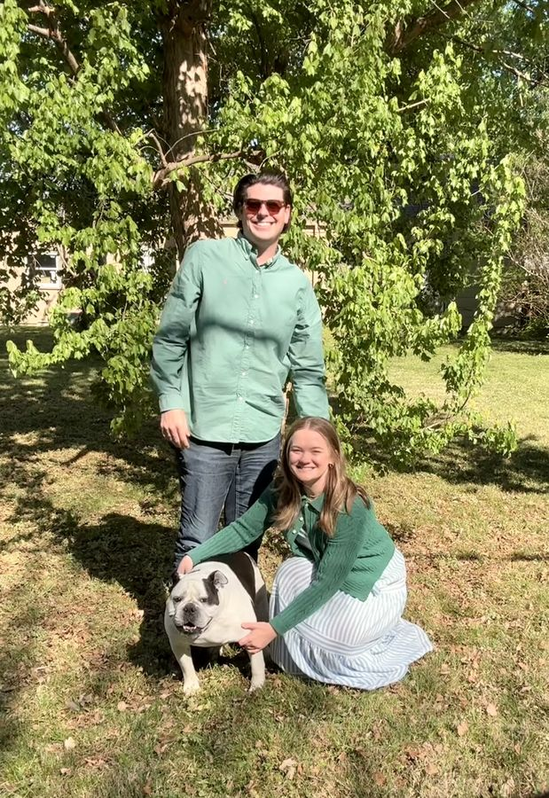

About Sampson Family Law
A small Tulsa practice, and a student experiment in building a responsible professional website.
The family behind Sampson Family Law
Ben Sampson founded Sampson Family Law to give Tulsa families a steady hand through hard moments. Libby Sampson leads the firm's trial work, Jane keeps every file in order, and Tater runs the front desk.
The practice values clarity, steadiness, and preparation.
Meet the team
A law school demonstration, not a practice
Sampson Family Law was created by Ben Sampson, a law student, for a course on AI and the Law. The question behind it: can AI agents build a website as polished as a real firm's while staying honest about what it is?
No text, logos, reviews, or layout assets were copied from any real firm. The characters are played by the owner's family and friends using personal photos shared with permission; remaining stock photographs are free-licensed (see credits).
What is real and what is not
- Real: the statistics on the evidence page (each linked to CDC or Census sources), the official resource links, and the build log.
- Fictional: the firm, every character and role (attorneys, staff, clients, and receptionist), the address and 555 phone number, testimonials, client stories, outcomes, and founding date.
- Not present: any bar number, license, real award, real review, or real intake system. (The contact form emails the student presenter for a live class demo; please don't send sensitive information.)
Ready for a fresh start?
Schedule a confidential consultation. We will listen first and explain your options in plain English.
Demonstration only: consultations, fees, and the firm itself are fictional.